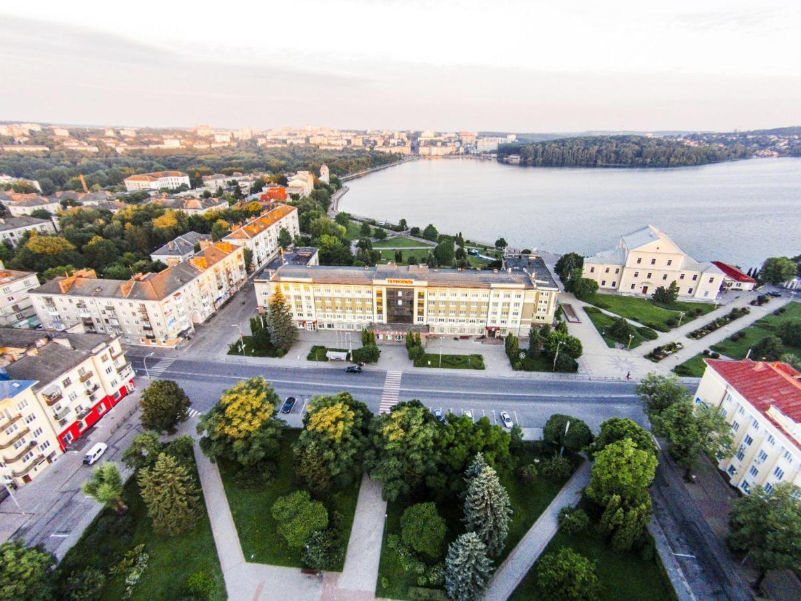
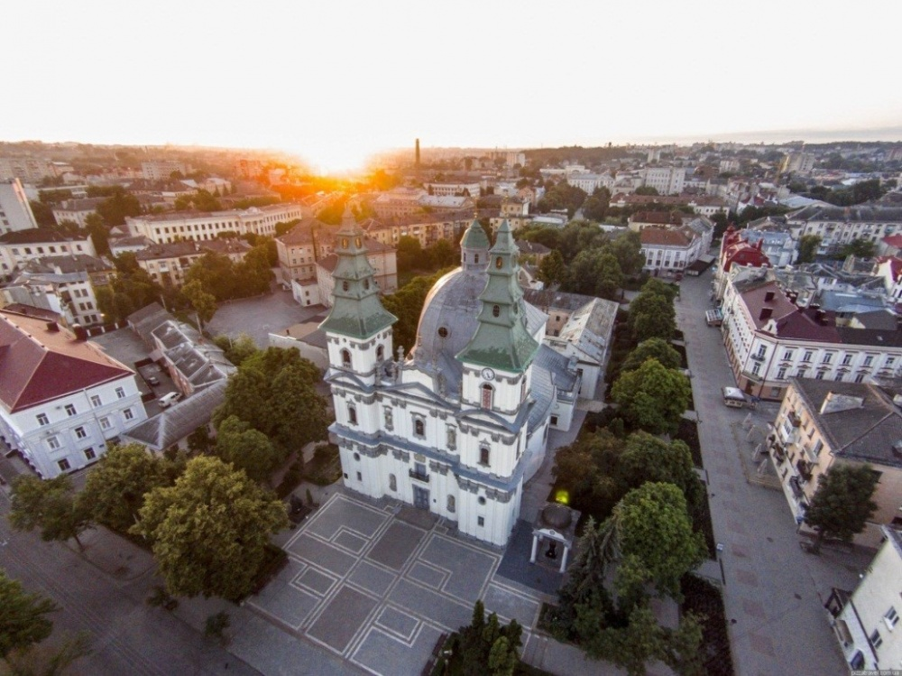

Ternopil (Ternopil (deutsch, englisch und polnisch Tarnopol) ist eine Stadt im Westen der Ukraine und Hauptstadt der Oblast Ternopil mit rund 225.004 Einwohnern.Die Stadt ist ein Wallfahrtsort und war bis Mitte des 20. Jahrhunderts Heimat sehr vieler juedischer, polnischer und deutscher Bewohner.)
Ternopil liegt in Ostgalizien auf der Podolischen Platte und wird von dem Dnister-Nebenfluss Seret durchflossen.
Die Stadt ist unmittelbar der Oblastverwaltung der Oblast Ternopil unterstellt. Sie ist die Hauptstadt des Rajons Ternopil, war jedoch bis Juli 2020 kein Teil desselben. Nach dem Ende des Zweiten Weltkrieges wurden mehrere Dörfer der Umgebung eingemeindet, dazu zählen Kutkiwzi , Pronjatyn , 1985 eingemeindet und Sahrebellja.
Geschichte: Ternopil hat im Laufe der Jahrhunderte verschiedene Herrschaften erlebt, darunter die polnisch-litauische Union, das Habsburger Reich und die Sowjetunion. Diese wechselhafte Geschichte hat zur kulturellen Vielfalt der Stadt beigetragen.
Die Bevölkerung von Ternopil beträgt etwa 217.000 Menschen (Stand 2021).
Die Kathedrale der Unbefleckten Empfängnis der Heiligen Jungfrau Maria, ehemals Dominikanerkirche, ist eine ukrainisch-griechisch-katholische Kathedrale in Ternopil, Ukraine, die der Erzdiözese Ternopil-Zboriv untersteht. Die Mitte des 18. Jahrhunderts im spätbarocken Stil erbaute Kathedrale ist eine der prägenden Sehenswürdigkeiten der Stadt Ternopil.